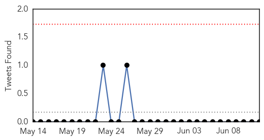
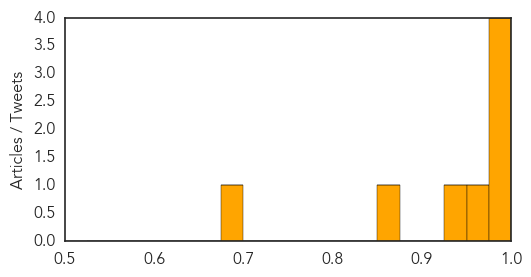

Ebola
30-Day Web Trend
0 alerts, 0 warnings

30-Day Twitter Trend
0 alerts, 0 warnings

Article Locations

Article Confidences

Top Articles:
- 1.000
- Fear and ignorance aid spread of Ebola
- 1.000
- Sierra Leone Shuts Borders to Guinea and Liberia as Death Toll Rises
- 1.000
- Curbing Guinea’s other outbreaks
- 0.999
- Sierra Leone suspends trade fairs, closes schools to fight Ebola
- 0.999
- Sierra Leone shuts borders, closes schools to fight Ebola
- 0.999
- CORRECTED-Sierra Leone suspends trade fairs, closes schools to fight Ebola
- 0.998
- Kailahun urgently needs Food Aid & Protective Gears
- 0.992
- Njaluahun Blame Government for Rapid Spread of Ebola
- 0.962
- Govt. closes all schools « Awoko Newspaper
- 0.901
- Awareness Times News Briefs from Sierra Leone
Top Tweets:
- 0.663
- RT: Sierra Leone shuts borders, closes schools to fight Ebola http://t.co/QkRK5mgrof
Influenza
30-Day Web Trend
0 alerts, 0 warnings

30-Day Twitter Trend
0 alerts, 0 warnings

Article Locations

Article Confidences
Top Articles:
- 0.998
- Scientist Makes Mutant, Infectious Flu Virus in Lab
- 0.996
- Emerging Flu Virus Resembles 1918 'Spanish Flu' Pandemic
- 0.996
- Key genes for Spanish flu pandemic exist in nature: report
- 0.985
- Researchers at UW lab create close copy of 'Spanish flu' pandemic virus
- 0.957
- Was it ‘crazy’ for this scientist to re-create a bird flu virus that killed 50 million people?
- 0.928
- Scientists recreate deadly Spanish flu
- 0.871
- Is It "Madness" to Rebuild a Flu Virus That Wiped Out 50 Million People?
- 0.693
- Scientists attack 'crazy' avian flu research
Top Tweets:
- 0.506
- RT: Almost 100 US kids. died of lab-confirm influenza 2013-14 flu seasn http://t.co/gAk5D1nOlx wd vax have prevented some?